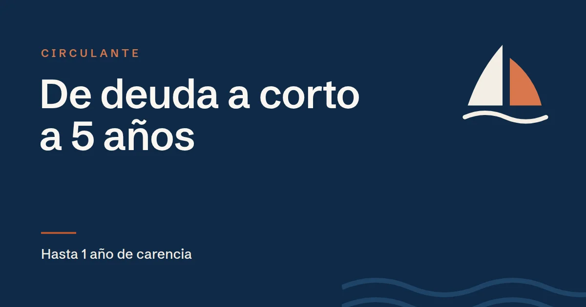

Cancelar deuda a corto plazo con ICO Crecimiento: cuándo tiene sentido

En resumen
Entre las finalidades de circulante de ICO Crecimiento está la cancelación de deuda a corto plazo, tanto comercial (proveedores) como financiera (bancos).
- Permite pasar deuda que vence en meses a un préstamo de hasta 5 años con 1 de carencia.
- Tiene sentido en empresas rentables cuyo crecimiento se ha financiado con deuda demasiado corta.
- No sirve para empresas con pérdidas, morosidad en la CIRBE o deudas con Hacienda o la Seguridad Social: no cumplen los requisitos.
Basado en el Documento de Condiciones Generales (DCG) de la línea ICO Crecimiento. Las condiciones pueden cambiar y, en caso de duda, prevalece el texto oficial: compruébalo siempre en www.ico.es.
El problema: crecer con deuda a corto
Es muy habitual: una pyme crece, necesita más circulante y lo va cubriendo con lo que tiene a mano, como pólizas de crédito, descuento comercial, confirming o pagar más tarde a los proveedores. Todo es deuda que vence en meses. La empresa es rentable, pero vive pendiente de las renovaciones y cualquier recorte de una línea bancaria la pone en apuros.
Qué permite ICO Crecimiento
El reglamento de la línea incluye dentro del circulante la cancelación de deuda a corto plazo de naturaleza comercial y financiera. Es decir, se puede pedir un préstamo de ICO Crecimiento para pagar esas deudas y devolverlo:
- en hasta 5 años,
- con hasta 1 año de carencia, en el que solo se pagan intereses,
- desde 50.000 € y hasta el 100 % de la necesidad justificada.
Ejemplo orientativo
Una empresa factura 3 millones de euros, gana dinero y tiene 350.000 € dispuestos en pólizas y descuento que renueva cada año. Si pasa 250.000 € de esa deuda a ICO Crecimiento a 5 años con 1 de carencia, durante el primer año solo paga intereses y después devuelve unos 5.200 € de capital al mes, más los intereses. Las pólizas vuelven a quedar libres para los picos de tesorería.
Cuándo tiene sentido
- La empresa es rentable y su problema es de plazos, no de resultados.
- La deuda a corto viene de financiar el crecimiento: más clientes, más stock, nuevos contratos.
- Los bancos han empezado a reducir o endurecer las líneas de corto plazo.
- Se quiere ordenar la deuda en un calendario de pagos previsible.
Cuándo no funciona
- Si la empresa ha tenido pérdidas en los dos últimos ejercicios o tiene patrimonio neto negativo: no cumple los requisitos.
- Si figura como morosa en la CIRBE, al pedirlo o al firmarlo.
- Si no está al corriente con Hacienda o la Seguridad Social: es un requisito previo, no algo que se pueda arreglar con el préstamo.
- Si la deuda corta tapa pérdidas recurrentes: el ICO analiza la capacidad de devolución y lo detectará.
Lo que conviene preparar
- El detalle de la deuda a corto plazo: con quién, cuánto, vencimientos y coste.
- Una explicación de por qué se generó esa deuda y cómo mejora la situación al alargar el plazo.
- Una previsión de tesorería que muestre que las cuotas son asumibles a partir del segundo año.
Después habrá que justificar ante el ICO el destino de los fondos con los documentos correspondientes.
Ojo: la modalidad ICO Crecimiento DANA sí excluye expresamente las refinanciaciones. Este artículo se refiere a la línea general.
Preguntas frecuentes
¿Se puede refinanciar deuda con ICO Crecimiento?
La línea general permite destinar el circulante a cancelar deuda a corto plazo, tanto comercial como financiera, con un préstamo de hasta 5 años y 1 de carencia. La modalidad DANA, en cambio, excluye las refinanciaciones.
¿Puedo pagar deudas con Hacienda con ICO Crecimiento?
No es el caso de uso: estar al corriente con Hacienda y la Seguridad Social es un requisito para solicitar el préstamo, no algo que se pueda resolver con él.
¿Conviene cancelar la póliza de crédito con ICO Crecimiento?
Puede convenir pasar a largo plazo la parte estable de la deuda a corto y dejar la póliza libre para los picos de tesorería. Depende de cada empresa y conviene estudiarlo con números.